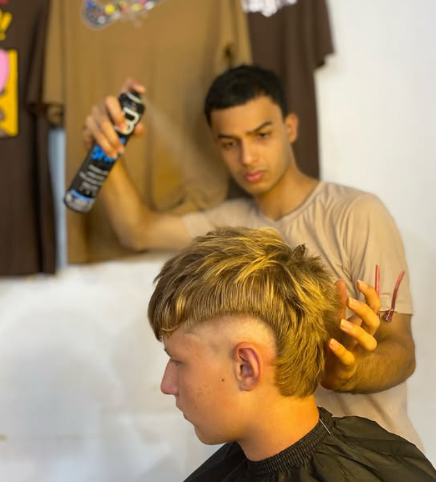

Barber Jones
Mi Historia
Yo soy Jones Moisés, nacido en la Colonia Yguazú. Desde niño soñaba con ser un campeón, y en mi adolescencia descubrí la barbería: fue amor a primera vista. Desde entonces, cada corte y cada cliente formaron parte de mi camino. La barbería dejó de ser solo un oficio y se convirtió en mi pasión, mi forma de vida y mi historia.